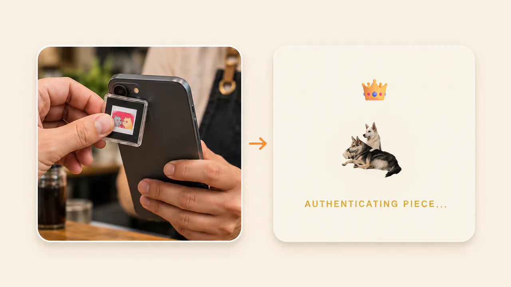
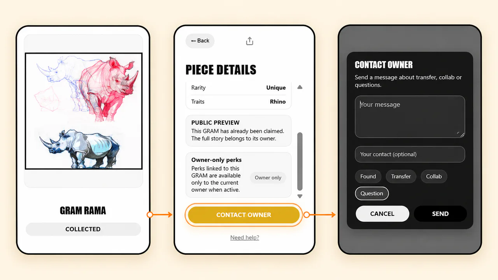

Solución de Problemas
Ayuda para problemas comunes de claim, propiedad, beneficios y actividad.
La GRAM no parece mía
Confirma que estás en la cuenta correcta y verifica si el claim se completó en esa misma cuenta.
La corona no aparece
Si la GRAM ya está vinculada a tu cuenta, prueba a actualizar la página. A veces el estado de propietario tarda en mostrarse visualmente.
No veo un beneficio
Algunos beneficios solo aparecen en el contexto adecuado: en la GRAM actual, en la colección o cuando se cumplen ciertas condiciones.
La página carga lentamente
Espera hasta 60 segundos, actualiza una vez y, si hace falta, vuelve a tocar la GRAM. Una breve pantalla de carga es normal.
El toque no abrió nada
Confirma que NFC esté activo, coloca la parte trasera del teléfono directamente sobre la GRAM, quita fundas gruesas o metálicas y mantén el toque 1–2 segundos.
Inicié sesión pero no volví a la GRAM
Vuelve a la página de inicio y busca “Continuar el claim de tu GRAM”. Si no aparece, vuelve a tocar la pieza física.
El beneficio no se validó
Lleva la GRAM física, pide al equipo que la toque de nuevo y comprueba si existe un tiempo de espera. Las fotos y capturas de pantalla no sirven.
¿Aún necesitas ayuda?
Espera unos minutos, prueba otro teléfono si es posible y habla con el equipo partner o con el soporte de Soldac Studio.
Guía visual

